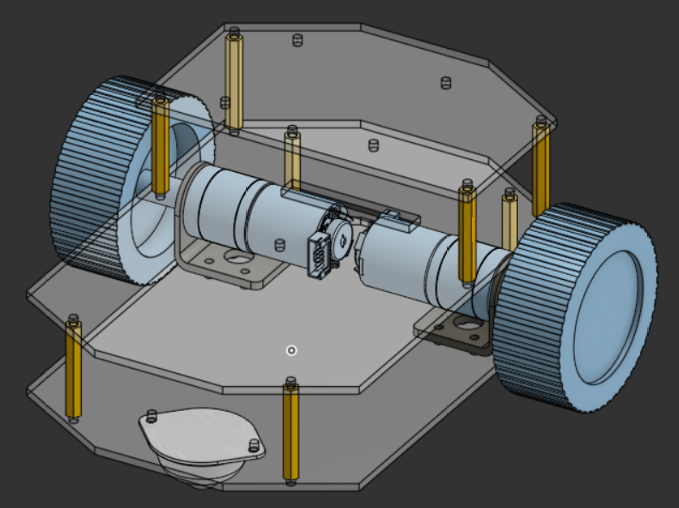
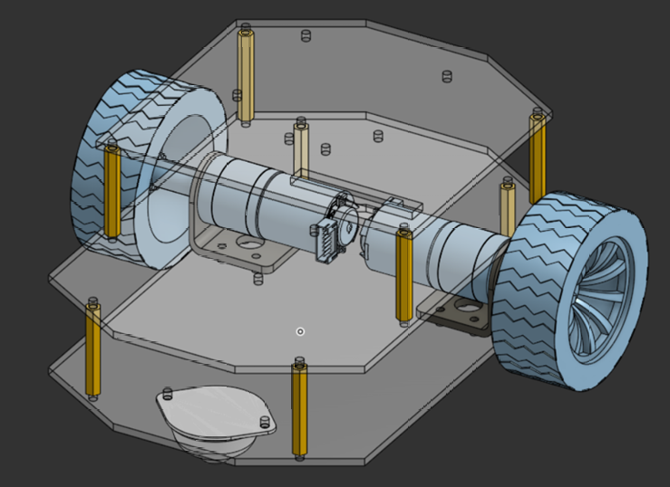
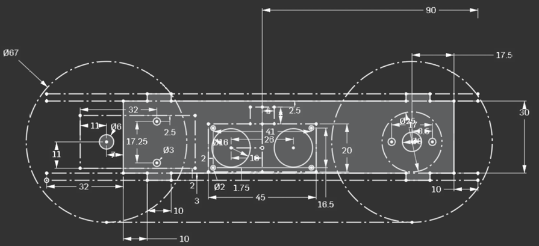
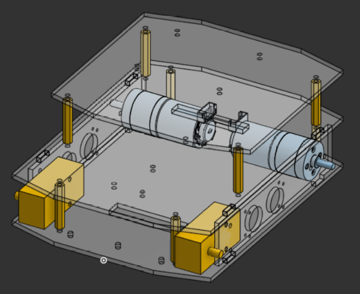
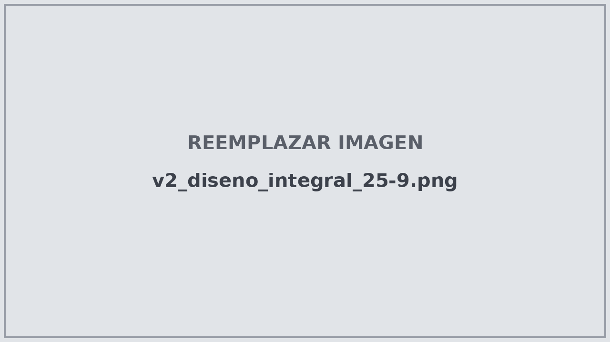
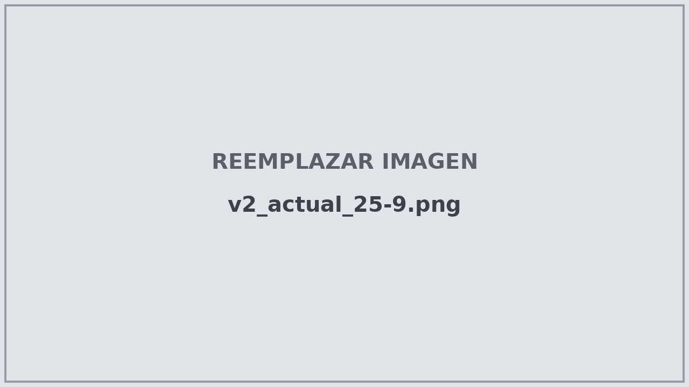
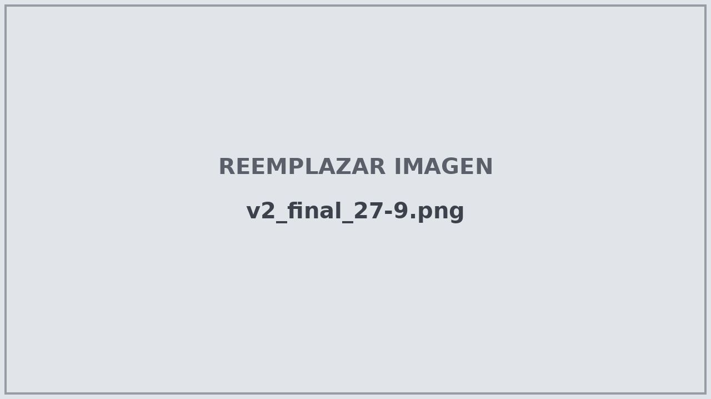

Versión 2
Semana 4 y 5 (18/9/26 - 27/9/26)
La versión 2 fue un rediseño importante del robot. Aquí se cambió la forma de moverse, se definieron los motores finales y se diseñaron la mayoría de los mecanismos.
Cambios principales
Se cambiaron los motores por los que se decidió usar para el diseño final (ver Configuración para motor).
Se agregó una placa superior para fijar componentes según los requerimientos del equipo.
Se cambió el soporte de los motores por uno que se ajusta más fácilmente a las necesidades de diseño.
Se quitaron piezas que no eran estrictamente necesarias.
Se reemplazó la rueda loca por ruedas normales no energizadas.


Primer diseño de la versión 2 - 18/9/26
Cambio de rueda loca a 4 ruedas
El cambio más importante fue sustituir la rueda loca por ruedas normales sin motor, como en los autos comunes.
La idea surgió al desmontar un motorreductor recto: se dieron cuenta de que se podía quitar el motor y los engranajes que no estaban conectados al eje de la rueda, de forma que el conjunto quedara como una especie de balero. Así se pueden usar 4 ruedas con solo 2 motores.
Rueda loca |
4 ruedas (2 con motor, 2 sin motor) |
|
|---|---|---|
Estabilidad |
Menor |
Mejor |
Agarre |
Menor |
Mayor |
Obstáculos |
Puede tener problemas por la posición de la rueda |
Mejor capacidad para superarlos |
Motores necesarios |
2 |
2 |
Truco
Esta solución no agrega motores, ni controladores, ni carga de programación: cuatro ruedas, pero los mismos dos motores.
Rediseño
Durante el 21/9/26 se amplió el tamaño de la placa superior por petición del equipo, se cambiaron algunas medidas del tamaño y forma del chasis y se dio mayor detalle a las llantas por fines estéticos.


Rediseño de la versión 2 - 21/9/26
Sketch lateral
Con base en las medidas del chasis y los soportes de los motores se hizo un sketch lateral para calcular las distancias entre las piezas, de forma que todos los mecanismos puedan funcionar al mismo tiempo. Se priorizó que la base del robot quede paralela al piso, para no generar problemas en la programación.


Sketch lateral - 23/9/26


Rediseño de la versión 2 - 24/9/26
El 24/9/26 se hicieron cambios en la geometría del robot, principalmente para ajustar todas las medidas con el cambio en las ruedas.
Diseño integral de mecanismos
Para el 25/9/26 se había diseñado la mayoría de los componentes mecánicos del robot, incluyendo el primer mecanismo para recoger la pelota (ver Mecanismo para recoger la pelota).


Diseño integral de mecanismos - 25/9/26
Nota
Algunos componentes todavía no estaban en su posición final dentro del diseño, y faltaba recibir la cámara para diseñar su soporte con base en sus medidas.
Se agregaron movimientos muy básicos al ensamble para verificar que no hubiera interferencia entre mecanismos, se corrigieron algunos errores de diseño y se agregaron detalles estéticos.


Diseño actual de la versión 2 - 25/9/26
Versión 2 terminada
Se terminó el diseño de la segunda versión, que se cortó y se probó.


Diseño final de la versión 2 - 27/9/26
Problema encontrado
Al probar esta versión, programación pidió una nueva con la capacidad de girar exactamente sobre su propio eje, ya que es necesario para que funcione el algoritmo que se está desarrollando (ver Introducción a la resolución de maze). Esto dio origen a la Versión 3.
Importante
Un robot que no puede girar sobre su propio eje no es capaz de hacer giros de 90° precisos dentro de un laberinto de casillas.